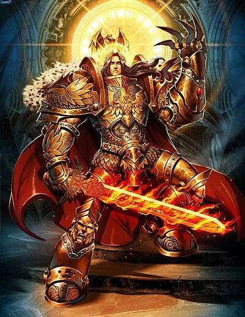

I Love the table top and video games of Warhammer 40k. a series in the 401st millennium where peace and love are replaced by war and....war, its in the name. Humanity fights against the stars, facing Demons, Aliens, and more, in a brutal and frankly scary universe, from the Necrons, aliens turned to undead machines to the forces of Chaos, 4 gods wanting nothing but total power! Currently it is in its 11th edititon, starting from September 1987, lasting to today. Here is their page for Games Workshop 40k. My armies are that of the Adeptus Custodes , Golden protecters of the golden throne on terra! and The Blood Ravens, Space marines , the most iconic and brutal warriors in the galaxy! Here are links for the Adeptus Custodes and the Space Marines. All champoins of the Emperor of Mankind, shown Below.
